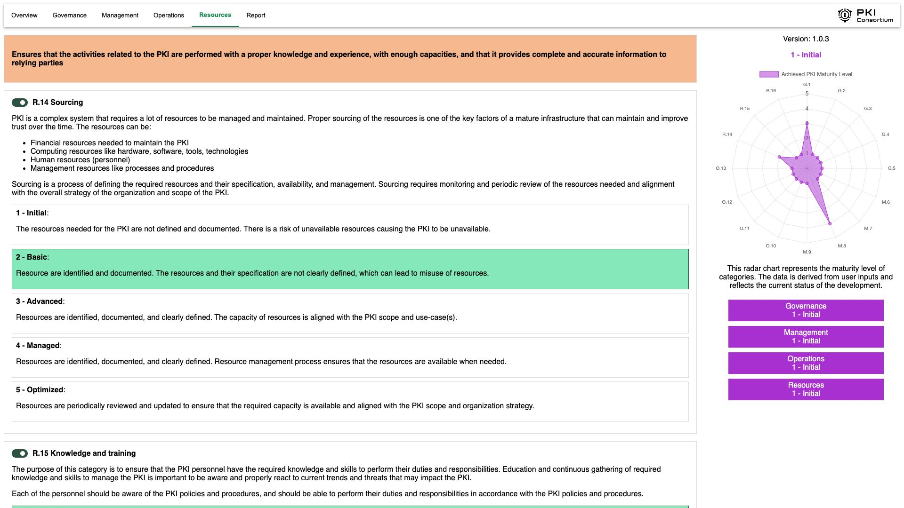
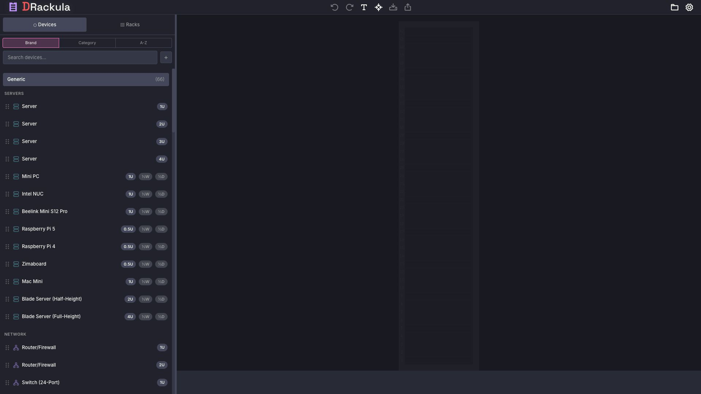
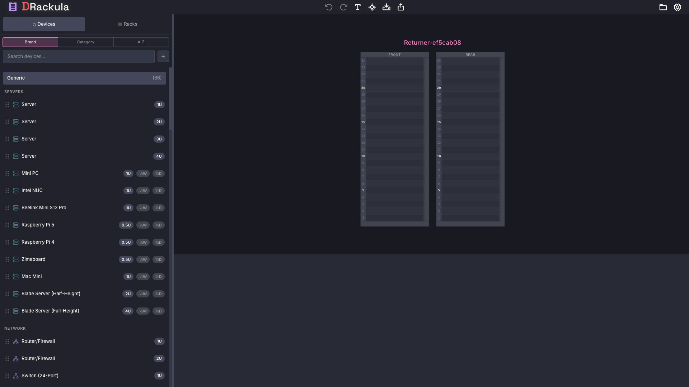
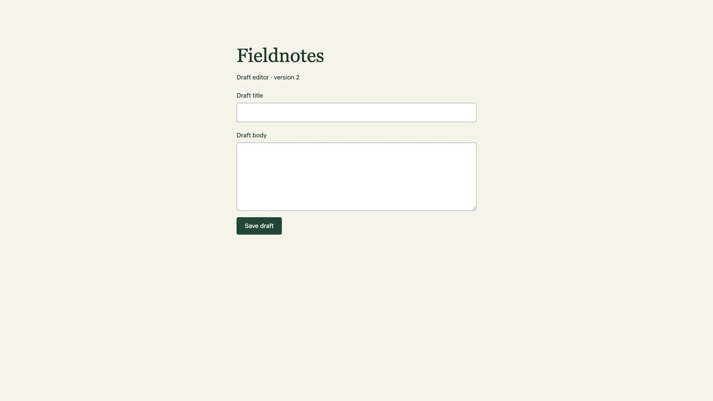
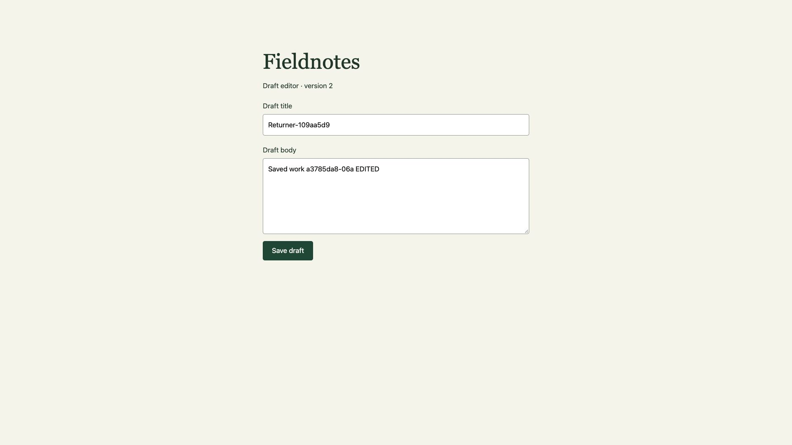

Returner · built with Kane CLI for the Kane CLI Online Hackathon
Release checks for the people who come back.
Browser tests start with an empty profile, so they only meet new users. Returner rehearses each release as a new user and as a returning user with yesterday's saved work, in real Chrome via Kane CLI. When the returning user breaks, a coding agent repairs it, and Kane replays the exact same saved profile to decide.
Repository4-minute walkthroughRecorded run at 50×
Real regression · shipped in a release
PKI Consortium self-assessment
Assessment model 1.0.0 → 1.1.0 · pkic/self-assessment#148 · repaired by Claude Code
The loop's own replay of this patch came back inconclusive: Kane read the instruction "fail immediately without typing" as an order to stop. The check was reworded as a plain read-only rule with the same requirements, and the patch was replayed by hand from the same saved profile. The patch also treats every unversioned save as a 1.0.0 save, so users who first saved on the shipped 1.1.0 release could lose an answer. For a loop with no human step, see the uninterrupted Codex run below.
- 1
Returning user fails
Console: Cannot read properties of undefined (reading 'result')
- 2
Kane's finding goes to the agent
The page tries to read a result that is not available during startup. This stops the page from displaying the Report, Governance, Management, and Resources tabs. Fix the startup path so it checks that the required result exists before reading it, then reload and verify that the saved assessment and all tabs appear. evidence: co…
Plus the unchanged objective and the release promise. The agent edits a disposable copy only.
- 3
Claude Code's patch
src/components/Assessment/Assessment.tsx
src/utils/migrateProgress.test.ts
src/utils/migrateProgress.tsconst KEYS_FROM_100: Record<string, string> = { "M.5": "M.6", "M.6": "M.7", "O.15": "O.10", "O.13": "O.11", "O.7": "O.12", "O.12": "O.13", "R.10": "R.14", "R.11": "R.15", … 48 more added lines - 4
Replay from the same saved profile passes

Reviewed the Report, Governance, Management, and Resources tabs without changing any information. Confirmed the Report tab showed Assessment Name “Returner-5ff8dd89” and…

Recorded run · 20 min 6 s · fixed on attempt 1
The same regression, one uninterrupted run
Assessment model 1.0.0 → 1.1.0 · pkic/self-assessment#148 · repaired by Codex
- 1
Returning user fails

Console: Cannot read properties of undefined (reading 'result')
- 2
Kane's finding goes to the agent
The page hit an error while starting and did not display the assessment interface or its tabs. Fix the startup error that reads an undefined result, then reload the assessment and confirm that the tabs and saved assessment data appear. evidence: console_error: Cannot read properties of undefined (reading 'result') evidence: con…
Plus the unchanged objective and the release promise. The agent edits a disposable copy only.
- 3
Codex's patch
src/components/Assessment/Assessment.tsx
src/types/types.ts
src/utils/restoreProgress.tsconst previousKeys: Record<string, string> = { "M.6": "M.5", // Key management "M.7": "M.6", // Certificate management "O.10": "O.15", // Resilience "O.11": "O.13", // Automation "O.12": "O.7", // Interoperability "O.13": "O.12", // Monitoring and auditing "R.14": "R.10", // Sourcing "R.15": "R.11", // Knowledge and training … 56 more added lines - 4
Replay from the same saved profile passes

Reviewed the Report, Governance, Management, and Resources sections without changing any values. Confirmed the assessment name is “Returner-433e1172” and the assessor na…

Real regression · caught by its maintainers before release
Rackula rack designer
v0.6.16 → v0.7.0 development build · RackulaLives/Rackula#935 · repaired by Codex
- 1
Returning user fails

Console: Cannot read properties of undefined (reading 'map')
- 2
Kane's finding goes to the agent
The run navigated to the app and immediately checked the canvas. The screenshots show Devices selected and Racks available but not selected, so the saved rack was never looked for in its intended view. Update the check to open the Racks view, wait for the rack list or canvas to load, and then verify that Returner-ef5cab08 is pr…
Plus the unchanged objective and the release promise. The agent edits a disposable copy only.
- 3
Codex's patch
src/lib/schemas/index.ts
src/lib/utils/session-storage.tsconst saved = JSON.parse(serialized); if (Array.isArray(saved?.racks)) { return saved as Layout; } return LayoutSchema.parse(saved) as Layout; const migratePositions = (!data.racks?.length && !!data.rack) || needsPositionMigration(data.version, allDevices); - 4
Replay from the same saved profile passes

Verified that the existing rack named “Returner-ef5cab08” is displayed on the canvas. The requested rack was present successfully.


Our fixture · storage key deliberately renamed
Fieldnotes
v1 → v2 · repaired by Codex
- 1
Returning user fails

Checked editor fields after loading; both are blank and no existing requested draft is available.
- 2
Kane's finding goes to the agent
The test started with no saved draft matching the required title and body. The available evidence shows only an empty editor and does not prove that the application deleted or failed to load an existing draft. Restore or seed the draft titled "Returner-109aa5d9" with body "Saved work a3785da8-06a" before rerunning the check.
Plus the unchanged objective and the release promise. The agent edits a disposable copy only.
- 3
The fix (as committed in the fixture)
draft.js
const saved = JSON.parse( localStorage.getItem(key) ?? localStorage.getItem("fieldnotes.v1") ?? "null", ); - 4
Replay from the same saved profile passes

Opened the existing draft titled “Returner-109aa5d9.” Confirmed that its original body was “Saved work a3785da8-06a,” then appended “ EDITED” and saved it. Reloaded the …


Clean upgrade · unmodified upstream builds
DeckMark v2.5.3 → v2.5.4
An open-source Markdown editor: the returning user's note survives

Opened the existing note containing “Returner-ec2ac13a” without recreating its content. Confirmed the note still included “Saved work 366a4528-040”, then appended “EDITED” and allowed the change to save. Reloaded the note and confirmed that “Returner-ec2ac13a…
- Every screenshot, verdict and finding comes from Kane CLI's own run evidence; patches are the agents' exact diffs (Fieldnotes shows the fixture's committed fix).
- Rackula's regression was caught by its maintainers before release and never shipped; Returner reproduces it on the commit before their fix. The PKI Consortium regression shipped.
- Repairs map these specific data changes; upstream projects later shipped general migrations. Method and disclosures are in each evidence folder.